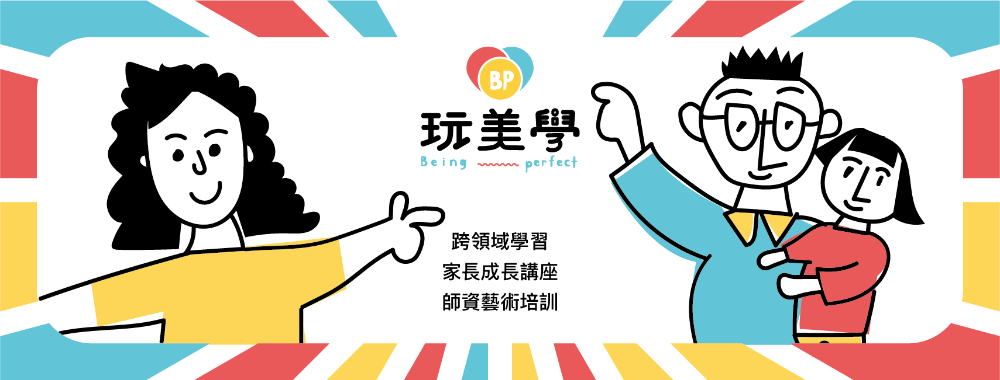

降低選擇成本
協助家長看見課程背後的師資專業、教育理念與內容價值。

教育共生平台 / 師資賦能 / 課程整合
玩美學 Being Perfect 整合優質師資、課程內容與家長需求，讓教育資源被更清楚地理解，也讓真正有價值的課程被看見。
What We Do
家長需要值得信任的教育選擇，師資需要能被理解與推廣的舞台。玩美學站在兩者之間，協助整理課程價值、媒合合適需求，並透過內容、社群與講座，建立能持續循環的教育共生系統。
協助家長看見課程背後的師資專業、教育理念與內容價值。
協助師資把專業轉化成可被理解、可被報名、可延續的課程服務。
用內容、講堂與社群讓好教育被看見，形成長期影響力。
For Parents
面對眾多課程、講座與教育資訊，玩美學協助你看見課程背後的師資專業、教育理念與內容價值，讓選擇不再只是比較價格與時間，而是找到真正值得信任的教育資源。
探索課程與講堂For Educators
玩美學協助教育工作者整理課程價值、建立清楚定位，並透過平台與社群讓好的內容被家長理解。
加入教育共生圈Platform
無論你是正在尋找教育資源的家長，或是希望讓專業被更多人理解的教育工作者，玩美學都希望成為你身邊的支持系統。